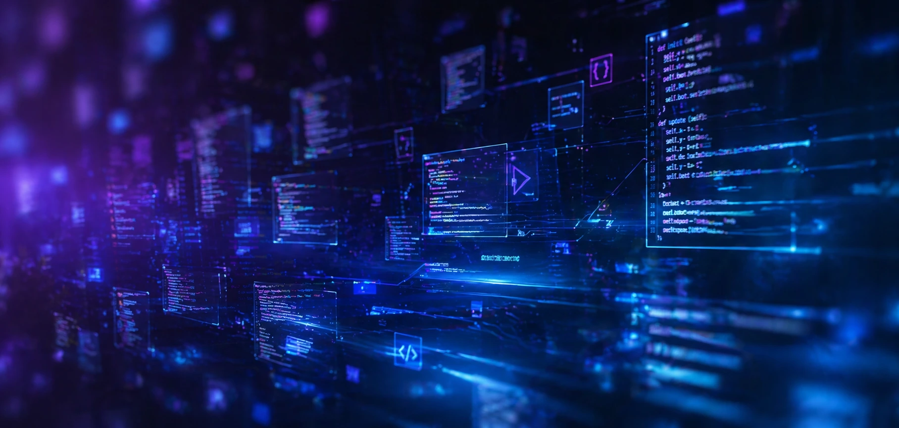
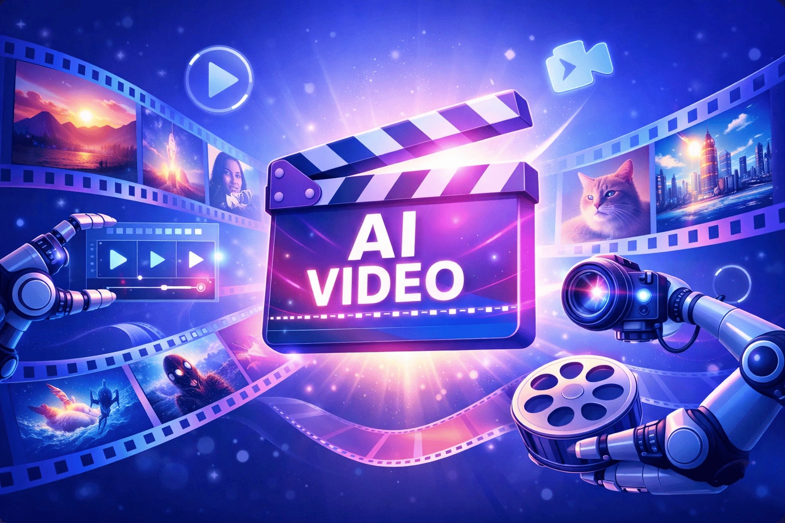
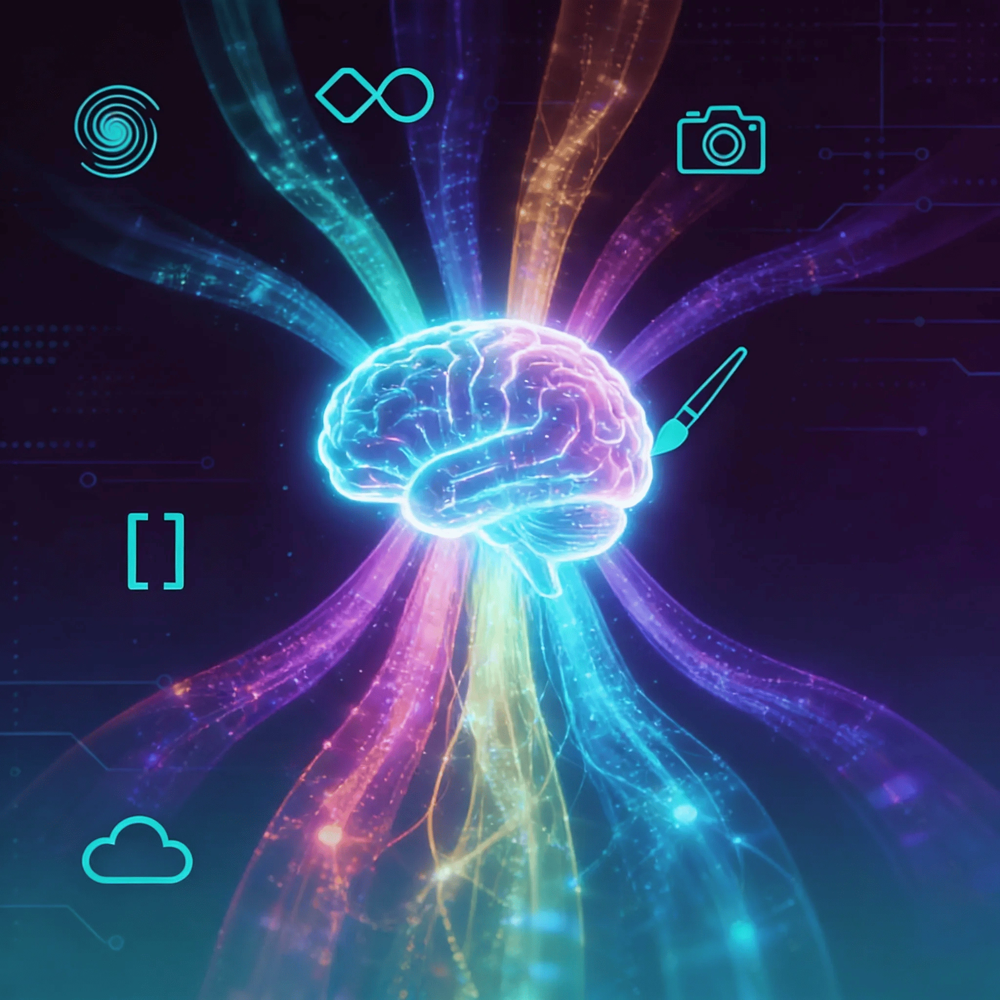

Топ 7 нейросетей для генерации видео
Инструменты, которые в корне меняют скорость и качество работы
Лучшие инструменты, сервисы и идеи из мира ИИ

Инструменты, которые в корне меняют скорость и качество работы

Инструменты, которые помогают создавать уникальный контент для всех.

Инструменты, которые реально меняют работу и творчество.